DT용
기준 플랜트는 5개의 구획으로 나뉜 활성 슬러지 반응기로 구성되어 있으며, 두 개의 혐기성 탱크와 그 뒤에 세 개의 호기성 탱크가 있습니다. 따라서 이 플랜트는 질산화와 전탈질화를 결합하여 대규모 플랜트에서 생물학적 질소 제거를 달성하는 데 일반적으로 사용되는 구성을 갖추고 있습니다.
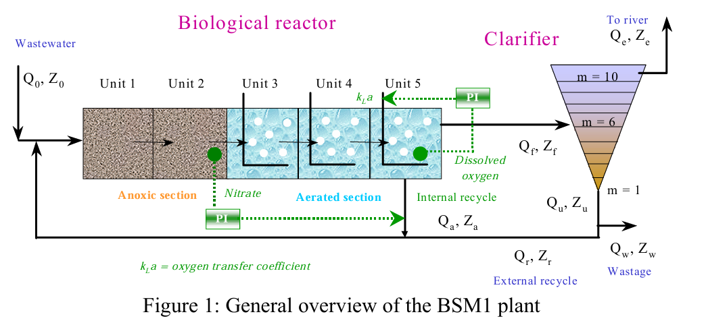
벤치마크를 검증하기 위한 기본적인 제어 전략이 제안되었습니다. 이 전략의 목표는 산소 전달 계수를 조작하여 반응기 최종 구획의 용존 산소 수준을 제어하고, 내부 재순환 유량을 조작하여 마지막 무산소 탱크의 질산염 수준을 제어하는 것입니다.
2. 시뮬레이션 모델
2.1. 일반적인 특징
비 안 올 때(평상시) 하루에 18,446 m³/일의 하수가 들어옴. 들어오는 물 1 m³마다 미생물이 분해할 수 있는 유기물은 300 g/m³. 반응기에 물이 머무는 HRT(수리학적 체류시간) = 14.4 시간. 총 탱크 용적 = 생물반응조 + 침전지 합쳐서 12,000 m³. 전체 12,000 중 반은 반응조, 반은 침전지. 이때 하루에 385 m³/일 만큼을 밖으로 빼낸다. 이 배출조건에서 미생물 덩어리가 시스템에 평균적으로 약 9일 머문다. 유입 변동(influent dynamics)은 3개 파일로 정의되는데, 평상시/장마/폭우 3가지 시간패턴 파일로 실험한다.
2.2. Bioprocess model
활성 슬러지 모델 1(ASM1; Henze)등(1987)은 생물학적 반응기에서 발생하는 생물학적 현상을 설명하기 위해 선택됨.
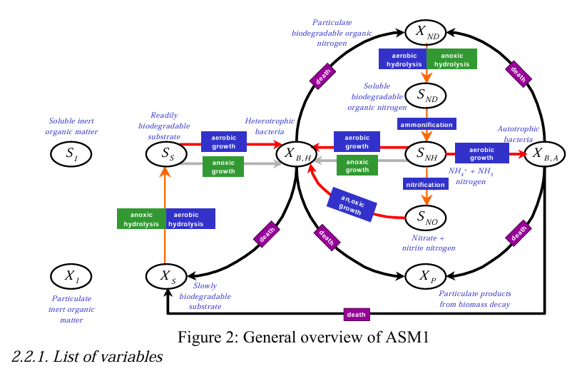
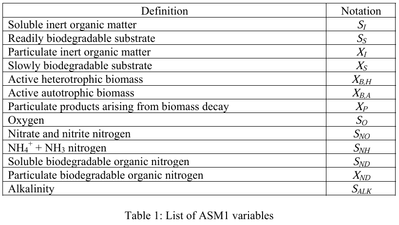
생물반응조(5개 탱크) 안을 “재료통(상태변수)”로 나누고, 그 재료통 사이를 오가는 “반응(프로세스)”을 정해서, 각 재료통의 증가/감소 속도를 수식으로 계산하게 만든다.
2.2.1 List of variables (상태변수 13개)
ASM1은 생물반응조 안의 상태를 13개 상태변수로 들고 간다(표 1). 크게 보면
①유기물(COD) ②산소/질산/암모니아(질소) ③미생물 ④알칼리도
핵심규칙은
- S_* = 물에 녹아있는(용존, soluble) 형태
- X_* = 입자(부유물, particulate) 형태
- inert = 미생물이 거의 못 먹는(잘 안 변하는) 것
- biodegradable = 미생물이 먹고 분해하는 것
변수정리
- 유기물(COD) 계열
- SI: 용존 불활성 유기물 - 물에 녹아있고 안 분해되는 COD(그대로 방류
- SS: 쉽게 분해되는 기질(미생물 “바로 먹는 것”) - 미생물이 바로 먹는 먹이
- XI: 입자 불활성 유기물 - 입자 형태의 안 분해되는 COD(침전/슬러지로 남기 쉬움)
- XS: 천천히 분해되는 기질(가수분해 필요) - 입자 형태의 천천히 분해되는 먹이(먼저 “가수분해”돼야 잘 먹힘)
- XP: 사멸 등으로 생긴 입자 생성물
- 미생물(바이오매스)
- XBH: 종속영양균(유기물 먹는 애들)
- XBA: 독립영양균(질산화균, 암모니아를 질산으로 바꾸는 미생물 )
- 전자수용체/질소
- SO: 용존산소 - 호기 반응에서 쓰임
- SNO: 질산/아질산 질소 - 산소 구간에서 전자수용체(탈질에 쓰임)
- SNH: 암모니아/암모늄 질소 - 질산화의 “먹이”
- SND: 용존 유기질소 - 물에 녹아있는 분해 가능한 유기질소(암모니아화되며 SNH로 감)
- XND: 입자 유기질소 - 입자 형태의 분해 가능한 유기질소(가수분해되어 SND로 이동)
- 완충
- SALK: 알칼리도- pH가 확 흔들리지 않게 버텨주는 “완충 탱크” 같은 값
2.2.2 List of processes (기본 프로세스 8개, ρ1~ρ8)
여기서 “프로세스”는 실제로 일어나는 생물학적 행동을 뜻해. ASM1은 8개로 단순화해서 정의하고, 각 프로세스 속도를 ρ1~ρ8로 둔다.
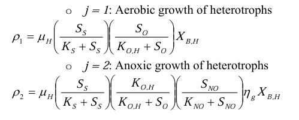
-호기성 종속영양균 성장(ρ1)
SS(먹이)와 SO(산소)가 있으면 XBH(종속영양균(유기물 먹는 애들)) 가 늘어난다.
- 무산소(탈질) 종속영양균 성장(ρ2)
산소 대신 SNO(질산)를 쓰면서 SS(먹이)를 먹고 XBH가 늘어난다(효율 보정 계수 ηg가 붙음).
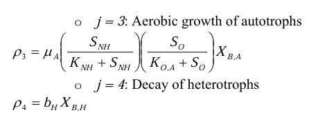
-호기성 독립영양균 성장(ρ3, 질산화)
SNH(암모니아)와 SO(산소)가 있으면 XBA(독립영양균(질산화균, 암모니아를 질산으로 바꾸는 미생물 ) )가 늘고, 질산(SNO)이 생성되는 쪽으로 간다.
-종속영양균 사멸(ρ4): XBH가 줄고, 일부가 XP/XS 쪽으로 간다.
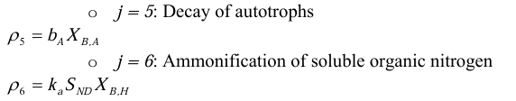
독립영양균 사멸(ρ5): XBA-가 줄고, 일부가 XP/XS 쪽으로 간다.
-암모니아화(ρ6): SND(용존 유기질소)가 SNH(암모니아)로 바뀌는 경로(속도는 XBH에 비례).
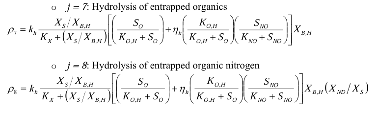
-가수분해(ρ7): XS(천천히 분해되는 입자성 기질)가 SS(바로 먹는 기질)로 풀리는 과정. 산소/질산 조건에 따라(호기/무산소) 속도 보정(ηh)이 붙는 형태로 정의돼 있다.
-유기질소 가수분해(ρ8): XND(입자 유기질소)가 SND(용존 유기질소)로 풀리는 과정(마찬가지로 조건 보정 포함).
2.2.3. Observed conversion rates
위의 모든 수식에서, 각 항들을 추출해서 최종적으로 변수의 속도식을 매기면 다음과 같다.
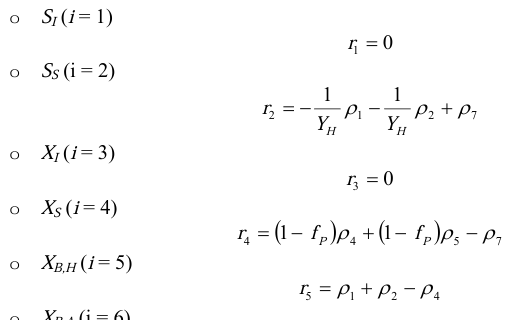 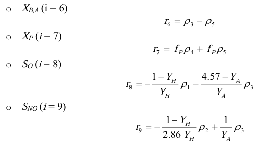 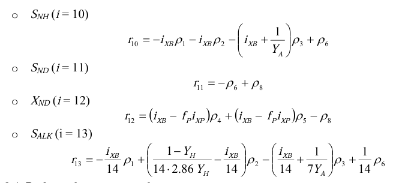
이때 각 항을 보면 매개변수가 존재한다. 이 값은 다음과 같다.
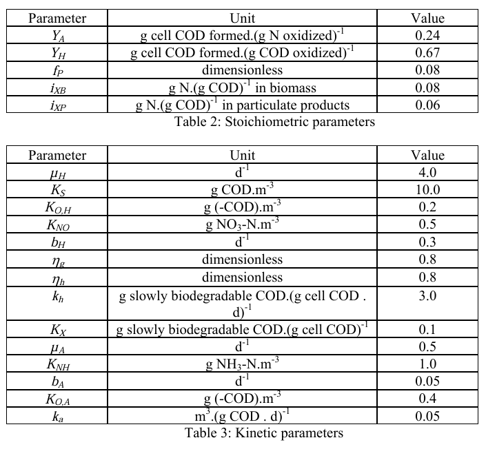
즉, COD, 질소, 알칼리도를 나타내는 상태변수 13개를 들고, 이들이 참여하는 반응을 나열하여 각 프로세스 속도(ρ1~ρ8)를 조합해서 각 상태변수의 변화율을 만들었음. 각 상태변수의 순변화율을 기본 프로세스 속도 ρ1∼ρ8의 조합(더하기/빼기)으로 쓴 거야. 즉, “이 변수는 어떤 반응들 때문에 늘고/줄어드냐”를 한 줄로 정리한 식.
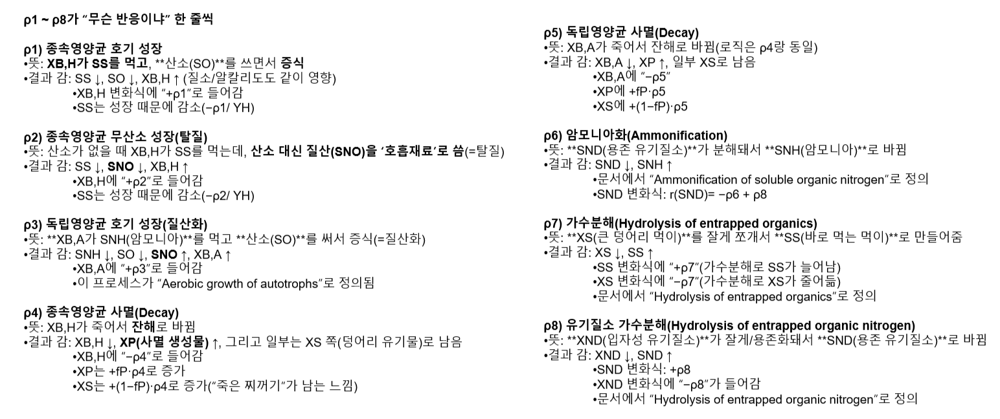
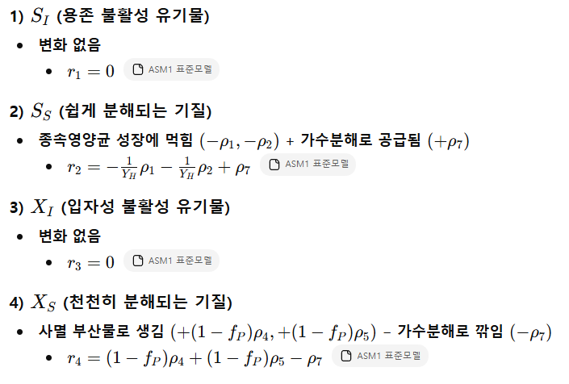 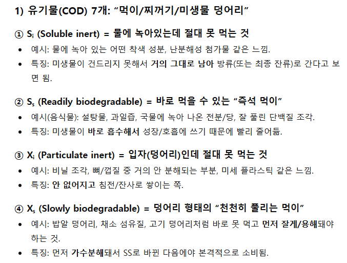 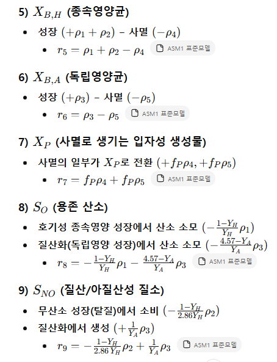 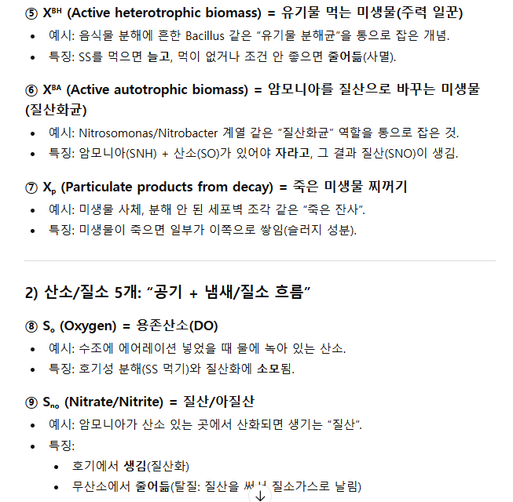 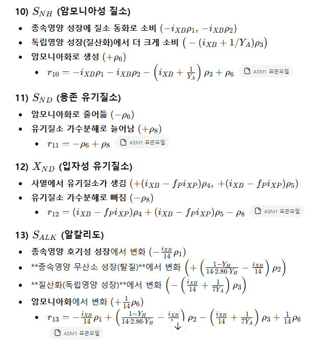 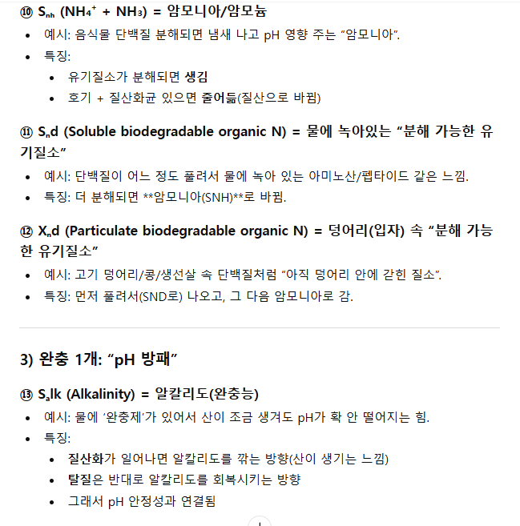
XND(덩어리 속 유기질소) →(ρ8)→ SND(물에 녹은 유기질소) →(ρ6)→ SNH(암모니아/암모늄) →(ρ3)→ SNO(질산/아질산)
맨 왼쪽은 “고기 덩어리 안 단백질”
맨 오른쪽은 “질산염”
2.3. Detailed plant layout
2.3.1. Bioreactor (General characteristics)
그림 1에 따르면 기본 설정값에 대한 생물반응기의 일반적인 특성은 다음과 같습니다.
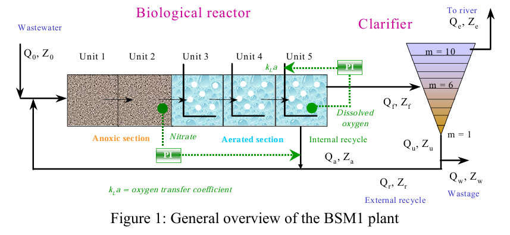
반응조 1개를 5개의 완전혼합 탱크(CSTR)로 나눠 직렬로 연결. 구조는 무산소 2칸 + 호기 3칸. 이 구성은 실제 하수처리에서 흔한 질산화 + (전단)탈질 조합을 흉내 낸 것. 무산소칸(1~2)에서는 뭐가 일어나? 이름 그대로 공기(산소)를 넣지 않는 칸이야. 그래서 DO(SO)가 낮아지고, 종속영양균이 산소 대신 **질산(SNO)**을 써서 먹이(SS)를 처리하는 “탈질” 쪽(ρ2)이 잘 켜지는 구간이 됨.
3) 호기칸(3~5)에서는 공기를 “어떻게” 주냐 (KLa)
여기서 문서가 말하는 포인트는 **“호기칸이라고 해서 공기 주는 방식이 다 똑같진 않다. 3~4번 칸: 공기 세기 고정 3~4번은 산소전달계수 KLa를 고정해 둠: KLa = 10 h⁻¹ (= 240 d⁻¹) 의미: “에어레이션을 일정하게 넣는 탱크 2개”로 보는 거
5번 칸: DO를 목표값으로 제어함. 5번은 DO를 2 g(-COD)/m³로 유지하도록, KLa를 조절해서 맞춘다고 되어 있음. “5번 칸엔 DO센서가 있고, 공기량(=KLa)을 올렸다 내렸다 하면서 DO 2로 맞추는 자동운전”
4) 각 칸에서 모델이 추적하는 것: Qk, Zk, Vk, rk
문서가 “각 compartment마다” 아래 4개를 정의한다고 했지.
Qk (유량): 그 칸을 통과하는 유량
Zk (농도): 그 칸 안의 상태(=너가 외운 13개 상태변수 SI, SS, …, SALK가 한 묶음으로 들어있음)
Vk (부피): 그 칸의 부피(위에서 숫자로 지정)
Non-aerated compartments: V1 = V2 = 1,000 m3 . Aerated compartments: V3 = V4 = V5 = 1,333 m3
rk (반응속도): 그 칸에서 ASM1 반응(ρ1~ρ8)이 만들어내는 “변화 속도”
즉, 5칸을 “서로 연결된 5개의 큰 믹서통”으로 보고,
각 통에서 **(유량으로 들어오고 나가고) + (그 통 조건(SO/SNO/SNH 등)에 따라 반응이 일어나고)**를 동시에 계산하는 거야.
2.3.2. Reactor mass balances (general formula)
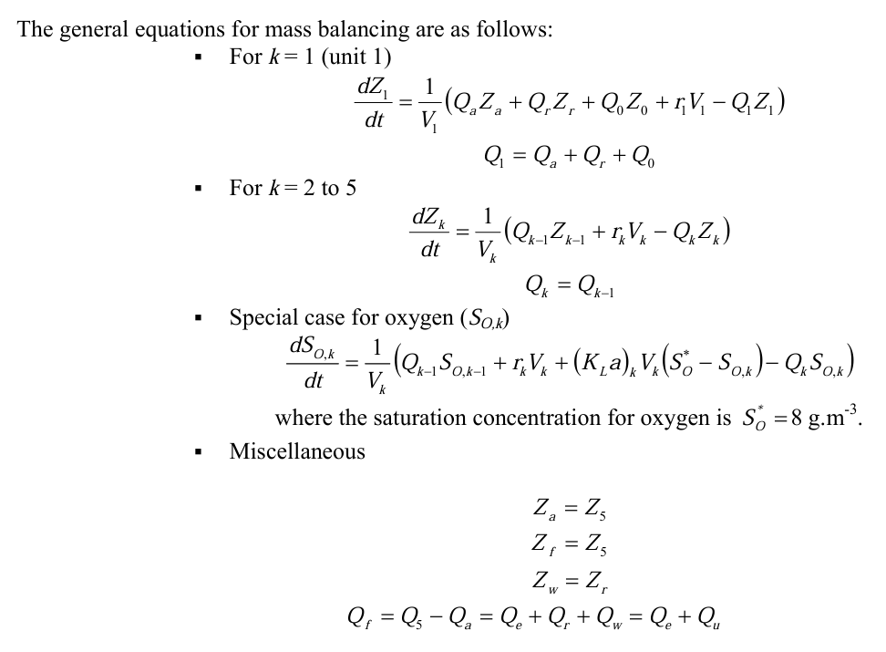
(탱크 안 농도 변화속도) = (들어오는 것 − 나가는 것)/부피 + (탱크 안 반응으로 생기거나 없어지는 것)
산소는 여기에 공기에서 녹아드는 항이 하나 더 붙음.
표준BSM1은 5개 구획(무산소 2 + 유산소 3), 유량 Q, 내부,외부 리사이클, 침전지까지 포함한 연속 공정 레이아웃 ->우리는 구획 1개. 3.8L 부피로 축약하고 유입,유출 Q=0(배치)로 둠(사실 음식물 유입은 있긴 하지만 한 통 안에서 시간에 따라 분해가 진행되는지를 보기 위해 이렇게 가정)
상태변수 13개(ASM1) :
COD: SI, SS, XI, XS, XB,H, XB,A, XP
산소,질소: SO, SNO, SNH, SND, XND
알칼리도
이 중에서
XS = 덩어리 먹이
SS = 녹은 먹이
XBH=X 하나로 축약
SO = DO(용존산소) 만 남기고, 옵션으로 SND, SNH도 일단 남김
나머지 SNO(질산,아질산), XB,A(독립영양,질산화균), SALK(알칼리도), SI,XI,XP,XND 빼버리기
이유: 유기물 덩어리 -> 녹음 -> 미생물 성장 -> DO 소모 과정에서 필요한 것만 남기고 질소 부분은 삭제, 질소의 경우 혐기성 과정이기 때문. 안 녹는 것도 일단 없다고 보기 (간략화를 위해)
8개 공정(ρ1~ρ8) -> 3개(+질소 1개)만 남긴 가정
-ρ7(가수분해): XS -> SS
-ρ1(호기 성장): SS 소비 -> X 생성
-ρ4(사멸): X 감소
4) 표준의 “관측 전환율 rᵢ” → 네 코드의 “미분방정식”으로 바꾼 조작
표준에서는 상태변수 변화가 “전환율 rᵢ = Σνᵢⱼ ρⱼ” 조합으로 정의돼
네 코드의 방정식은 사실상 표준의 아래 항들을 ρ2(무산소 성장), ρ5(독립영양 사멸) 등은 0으로 두고 가져온 형태야:
SS(녹은먹이)
표준: rSS=−ρ1/YH−ρ2/YH+ρ7
네 코드: dSS = +rho7 - (1/Y_H)*rho1
→ 여기서 ρ2를 버림(=무산소 경로 무시)
XB,H(미생물)
표준: rXB,H=ρ1+ρ2−ρ4
네 코드: dX = +rho1 - rho4
→ ρ2 버림
산소 SO
표준은 r8에 성장, 질산화까지 고려하지만 그중 종속영양 호기 성장에 의한 산소소모만 남겨서
O2소 = ((1-Y)/Y)*rho1로 둔 거야.
핵심 조작 포인트
표준의 “스토이키오메트리 행렬(νᵢⱼ)” 전체를 구현한 게 아니라,
너희가 남긴 상태변수/공정만 손으로 골라서 미분방정식으로 직접 써버린 형태.